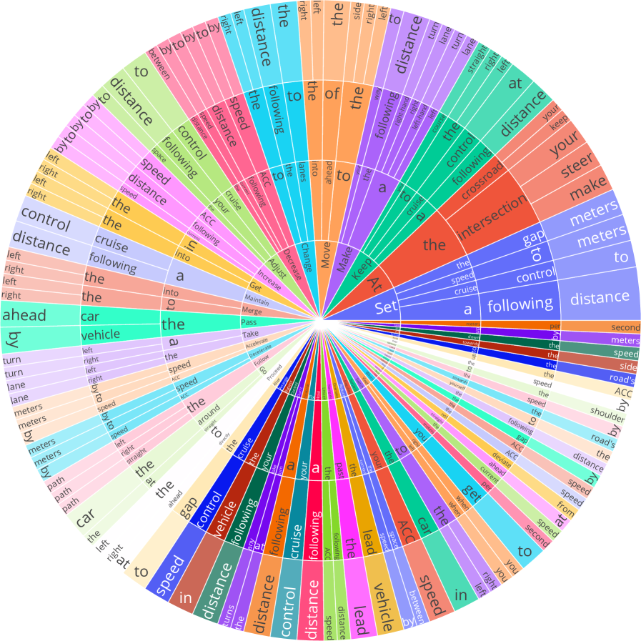

この論文は、LLMを自動運転へどう組み込むかを広く整理したサーベイである。LLMの推論能力や広範な知識が、現在の自動運転アルゴリズムに残る課題をどこまで補えるのかを、モジュール型アプローチとエンドツーエンド型アプローチの両面から検討している。
人工知能は自動運転の高度化と効率化において重要な役割を果たしてきたが、現行の自動運転アルゴリズムには依然として長尾問題や深い文脈理解の不足といった課題が残る。著者らは、強力な推論能力と豊富な知識を持つ大規模言語モデルが、これらの課題に対する有望な解決策になり得ると考えている。本論文は、LLMが自動運転をどのように強化し得るかを包括的に分析し、現在のソリューションが抱える問題と課題に対して、LLMがどのように働くかに焦点を当てている。
自動運転は、知覚、予測、計画、制御のどの層でも、単純なルールでは扱いにくい場面にぶつかる。LLMは、交通参加者の意図理解、複雑な文脈推論、知識活用、説明可能性、自然言語指示への応答などで価値を持ち得る。一方で、LLMは物理世界への接地が弱く、リアルタイム性、安全保証、幻覚、頑健性の面で厳しい制約を受ける。この論文は、その期待と限界の両方をまとめる位置付けにある。
LLMと自動運転の交差領域は、VLM、世界モデル、コード生成、説明可能性、運転支援エージェントなど周辺テーマが急速に増えており、個別論文を追うだけでは全体像を見失いやすい。このサーベイは、LLMが自動運転スタックのどこに入り得るか、何が期待されているか、何がまだ危ういかを横断的に把握するための基礎資料として使いやすい。
LLM4AD系のより具体的な設計論文と比べると、この論文はより広く「LLMが自動運転研究全体に何をもたらすか」を問うサーベイである。設計実装の詳細よりも、研究地図、課題整理、将来方向の見通しを得たいときに価値が高い。